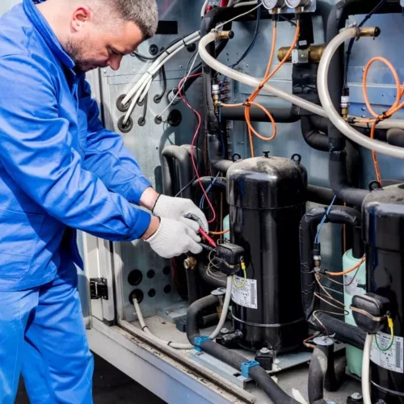
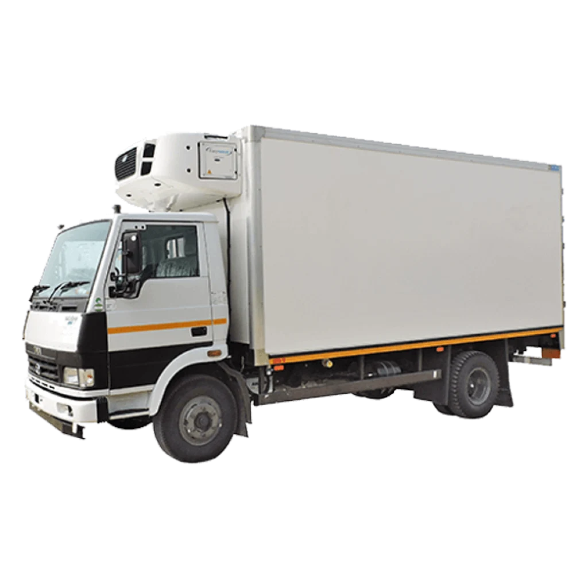
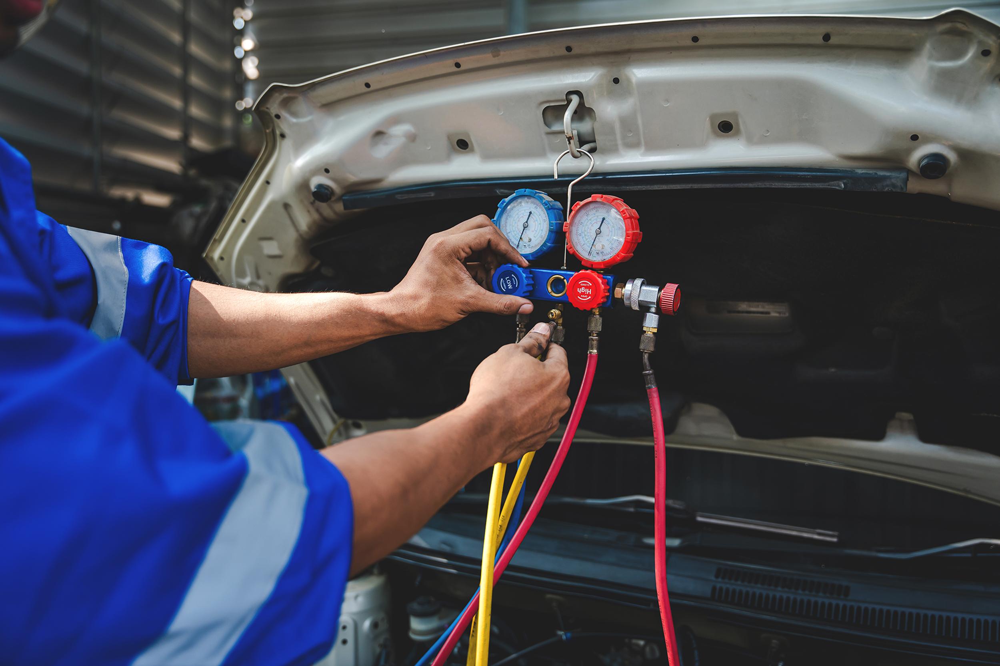
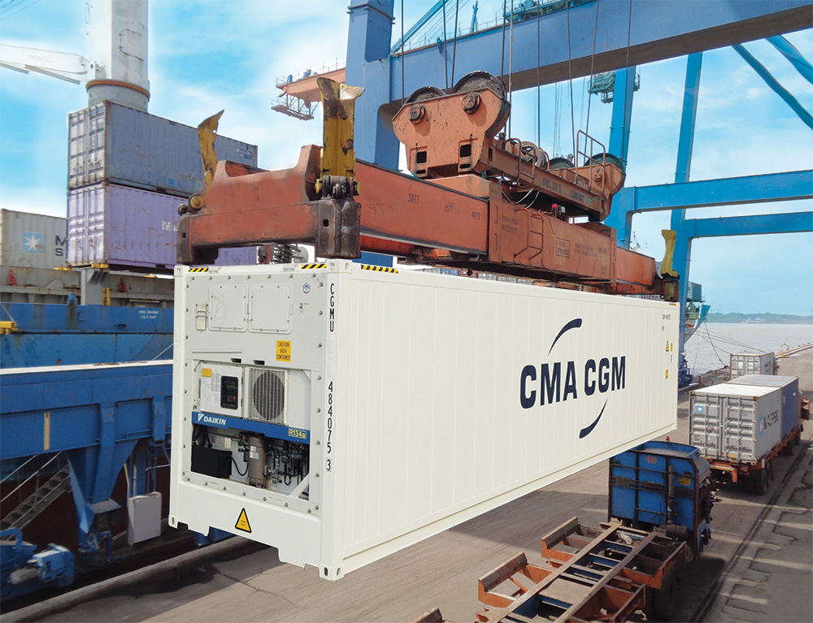
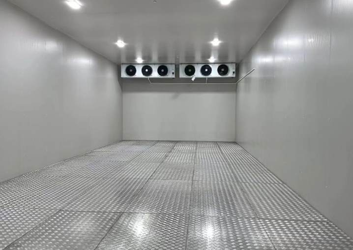
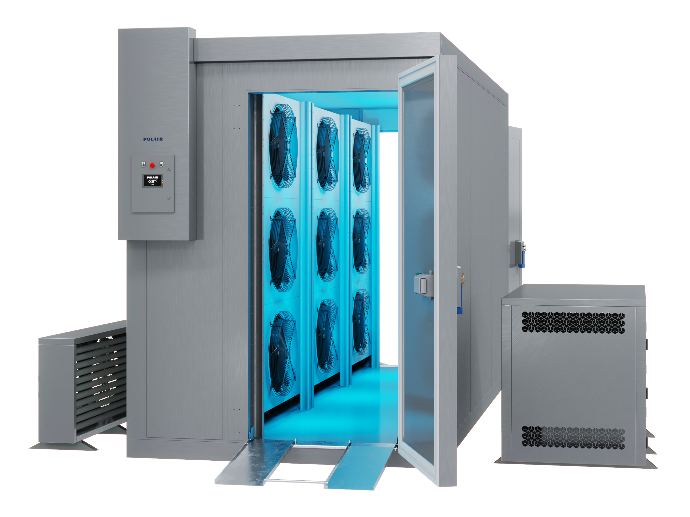
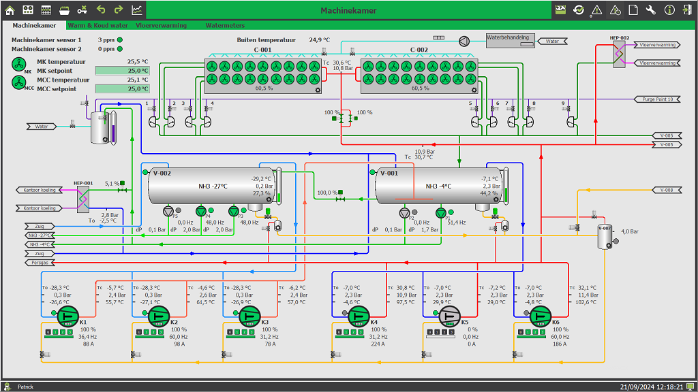

Холодильные системы
под профессиональным контролем.
RefServiceDV ремонтирует и оснащает холодильные системы во Владивостоке: от рефрижератора до промышленной камеры и автономной энергетики. Работаем точно, аккуратно и с гарантией на результат.
установка
CONTROL

электростанцияДля автономной работы ↗
INDEPENDENCE
вашего фургонаМаршрут, стоянки и геозоны в одной карте ↗
CONTROL
Все услуги
по холодильным системам.
От срочного выезда до проектирования камеры с нуля. Выполняем диагностику, ремонт, монтаж и сервис — с понятной стоимостью и гарантией.

Ремонт
рефрижераторов
Авторефрижераторы, прицепы и рефконтейнеры. Диагностика, компрессоры, фреон, электрика.
Обсудить задачу ↗
Изготовление
рефрижераторов
Утепление кузова, монтаж установки и запуск — полный цикл под ваш транспорт и маршрут.
Рассчитать проект ↗
Ремонт автокондиционеров
во Владивостоке
Заправка, поиск утечек, компрессоры и изготовление шлангов для авто и спецтехники.
Подробнее ↗
Ремонт
рефконтейнеров
Диагностика и ремонт холодильных установок контейнеров Carrier, Thermo King и других марок.
Получить консультацию ↗
Морозильные
камеры под ключ
Проектирование, монтаж, автоматика и сервис для рыбного, мясного производства и ритейла.
Подробнее ↗
Камеры
шоковой заморозки
Производительные решения до −45°C, аренда мобильной камеры и запуск под ваш продукт.
Подробнее ↗
Удалённый
мониторинг
Контроль температуры 24/7, история показаний и уведомления об аварии с любого устройства.
Подключить контроль ↗ 08Установка
GPS-трекера
Установим GPS-трекер на рефрижератор, настроим карту, историю маршрутов, геозоны, контроль стоянок и доступ с телефона.
Подобрать GPS-трекер ↗Профессионально.
Качественно. Надёжно.
Поэтому мы строим сервис вокруг скорости, точной диагностики и понятной ответственности.
Поговорить с инженером ↗Сначала разбираемся
Находим причину, а не просто меняем первую попавшуюся деталь. Фотоотчёт и смета — до начала работ.
Запчасти уже рядом
Работаем с проверенными поставщиками и держим ходовые позиции на складе во Владивостоке.
Отвечаем за результат
Договор, гарантия на работу, документы для бухгалтерии и один контакт на весь проект.
От Владивостока
по Дальнему Востоку.
Срочный выезд по Приморью и Дальнему Востоку. Консультации, подбор оборудования и удалённая диагностика — для объектов региона.
Четыре шага
до исправной системы.
Фиксируем задачу, объясняем причину неисправности и согласовываем работы до начала ремонта. Вы понимаете, что происходит, на каждом этапе.
Заявка
Пишите в мессенджер или звоните. Можно сразу прислать фото и модель оборудования.
Диагностика
Инженер уточняет симптомы, оценивает срочность и предлагает понятный план.
Ремонт
Согласовываем смету и выполняем работы в оговорённые сроки.
Гарантия
Проверяем работу системы, передаём документы и остаёмся на связи после запуска.
Вернём вашему
холоду стабильность.
Ответим в течение 15 минут в рабочее время. Подскажем, что делать прямо сейчас, даже если ремонт нужен срочно.